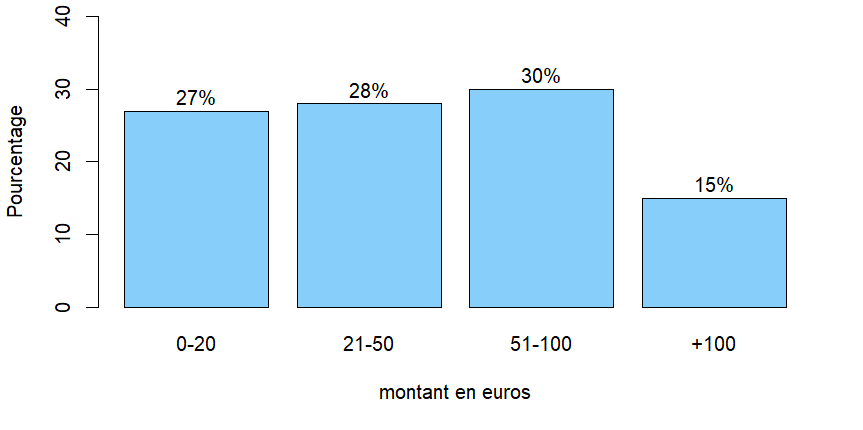
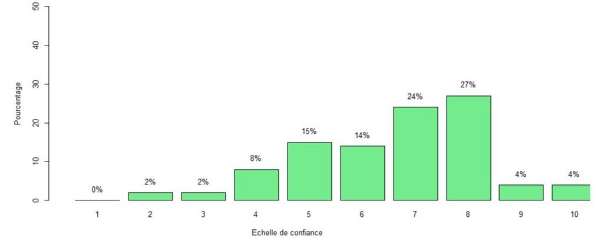
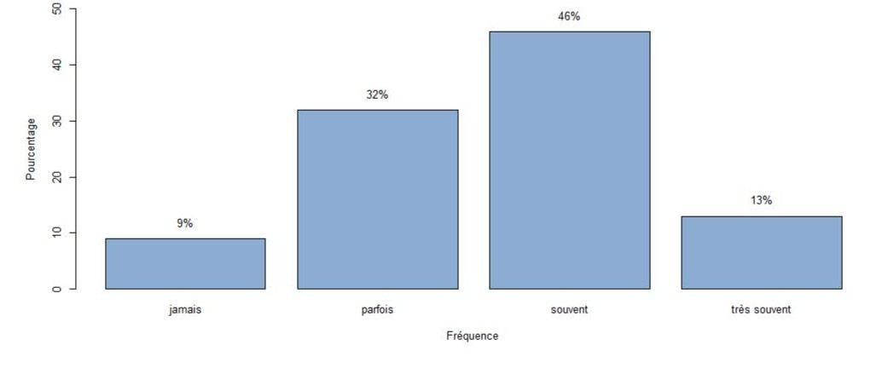

À propos
Ce projet universitaire, réalisé au sein du BUT Science des Données de l'IUT Grand Ouest Normandie, avait pour objectif de nous confronter à toutes les étapes de la mise en œuvre d'une enquête statistique réellee. L'étude s'est concentrée sur l'analyse du comportement et des habitudes des lycéens face au e-commerce.
Organisation du travail
Travail réalisé en équipe de 4 personnes avec des réunions hebdomadaires pour suivre l'avancement. Nous avons suivi différents cours en présentiel, tels que les statistiques ou les bases de la communication avec Word. Nous avons utilisé la suite Office (Word, PowerPoint) pour la collaboration et la restitution finale.
Démarche et résultats
Le processus a été rigoureux et structuré :
- Conception : Rédaction d'un questionnaire de 15 questions maximum en respectant des règles de codage précises via un dictionnaire des variables.
- Terrain : Collecte de données réelles auprès des lycéens de Paul Cornu à Lisieux.
- Analyse Statistique : Saisie sur Excel et traitement des données avec le logiciel RStudio (tris à plat, tris croisés et corrélations).
- Restitution : Rédaction d'un rapport complet et présentation orale des conclusions.
Quelques résultats clés :
- Amazon est le site le plus utilisé par 68% des lycéens interrogés.
- La catégorie "Mode/Habillement" domine largement les achats (57%).
- Plus de 95% des lycéens se déclarent satisfaits ou très satisfaits de leurs achats en ligne.
Acquis personnels
Compétences Techniques
Maîtrise de la chaîne de traitement de données : du recueil sur le terrain à l'analyse statistique sous RStudio, ainsi que la création de dictionnaires de variables.
Soft Skills
Développement de l'aisance relationnelle lors des enquêtes terrain et apprentissage du travail collaboratif en groupe projet.
Détails des analyses graphiques
Analyse du budget mensuel
Ce graphique met en évidence le montant moyen dépensé par les lycéens. On observe une concentration importante dans la tranche des 21-50 euros, confirmant un pouvoir d'achat régulier pour les loisirs numériques.

Confiance et Sécurité
L'échelle de confiance montre que la majorité des lycéens se sentent en sécurité lors de leurs transactions. Ce facteur est déterminant dans le choix des plateformes comme Amazon ou Vinted.

Fréquence d'utilisation
La fréquence des achats est étroitement liée à l'exposition aux réseaux sociaux. Plus le temps passé sur Instagram ou TikTok est élevé, plus la récurrence des commandes augmente.

Répartition des plateformes (Pie Chart)
Ce diagramme circulaire met en évidence une concentration majeure des motivations d'achat, où la qualité du service de livraison s'impose comme le critère prédominant en captant plus de 30 % des suffrages. Il devance de peu la facilité d'achat (28 %) et l'attractivité des prix (21 %), soulignant que pour cette population, l'efficacité logistique prime désormais sur le simple argument tarifaire.